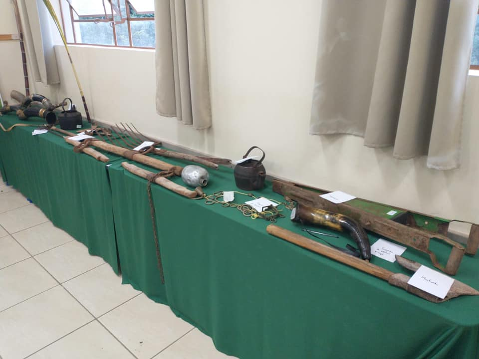

II Feira Estudantil da Educação do Campo

Sobre a Feira:
No dia 08 de junho de 2022 foi realizada no Colégio Estadual do Campo Agrônomo Hintz a segunda feira estudantil. A feira teve como objetivo mostrar a realidade dos alunos do campo.
Atrações:
- Barraca da Jardinagem
- Barraca dos chás
- Brinquedos do campo
- Barraca do Terceirão